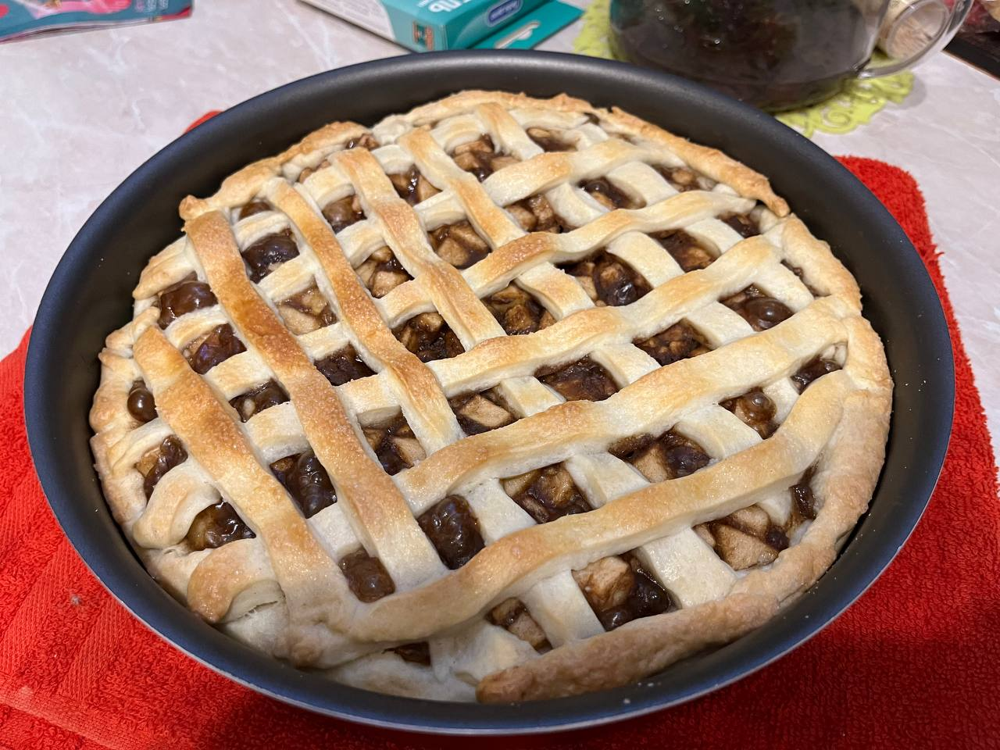
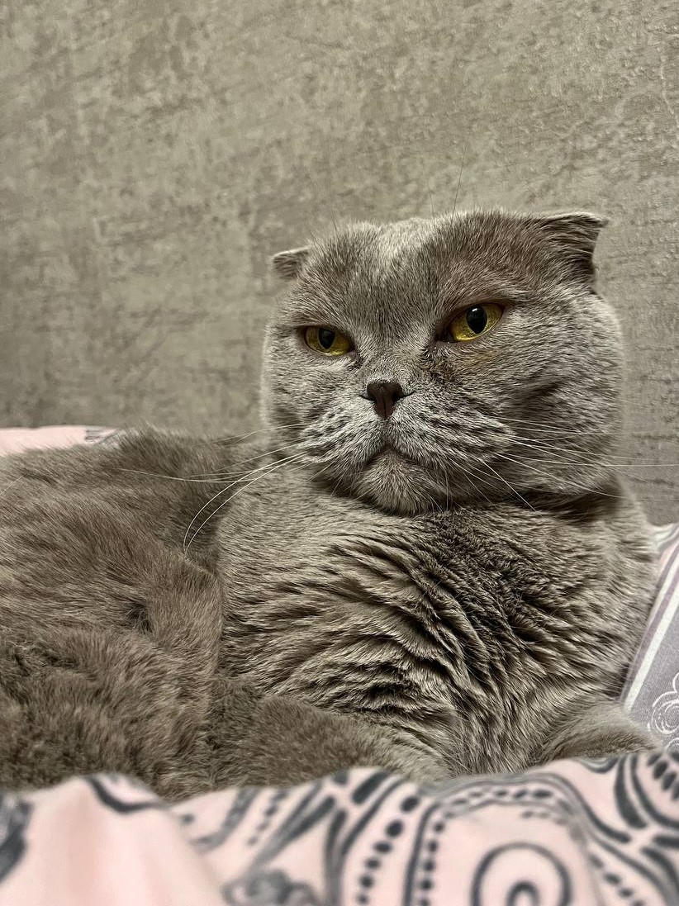

Готовка еды — это не только необходимый процесс, но и увлекательное хобби, которое позволяет проявить креативность и экспериментировать с вкусами. Многие находят удовольствие в создании новых блюд, изучении кулинарных техник и использовании свежих ингредиентов.
Это хобби может варьироваться от простого приготовления повседневных блюд до сложных кулинарных шедевров. Готовка также предоставляет возможность делиться блюдами с близкими, что создает атмосферу уюта и тепла.
Хотя прокрастинация часто воспринимается как негативная черта, для некоторых это может стать своеобразным хобби. Это время, когда человек откладывает выполнение задач в пользу более приятных или менее напряженных занятий.
Некоторые используют прокрастинацию как способ отдыха и перезагрузки, позволяя себе отвлечься от повседневной рутины. Это может включать просмотр сериалов, чтение книг или просто безделье. Главное — находить баланс между отдыхом и продуктивностью.
Игры с кошкой — это не только способ развлечь питомца, но и отличный способ провести время с любимым животным. Это хобби укрепляет связь между хозяином и кошкой, а также способствует физической активности для обоих.
Игры могут варьироваться от простых взаимодействий с игрушками до более сложных заданий, таких как обучение трюкам. Наблюдение за игривыми выходками кошки дарит радость и расслабление, а также помогает снять стресс.
Сон как хобби может показаться необычным, но для многих это важная часть жизни, позволяющая восстановить силы и зарядиться энергией. Качественный сон способствует улучшению настроения, концентрации и общей работоспособности.

Некоторые люди даже практикуют "сонизм" — уделяют внимание созданию идеальных условий для сна, включая выбор матраса, подушек и темноты в спальне. Сон может быть не только способом отдыха, но и возможностью для медитации и саморефлексии.